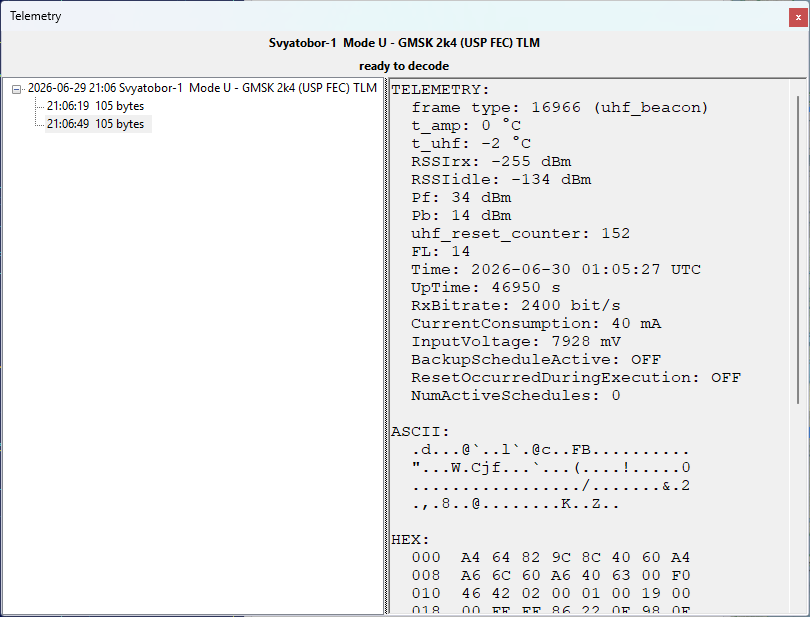
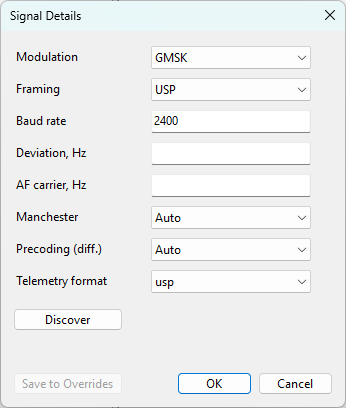

Telemetry Panel
The Telemetry panel shows the telemetry frames that SkyRoof decodes from the satellite signal. SkyRoof can decode the telemetry transmitted by many satellites without any external software: the built-in decoder demodulates and deframes the signal directly from the SDR, right inside the program. Unlike the external decoder and sound modem workflows, it needs no separate program, no Virtual Audio Cable, and no output stream — SkyRoof feeds the Doppler-corrected receiver passband straight to the decoder.
The panel is opened from the View / Telemetry menu. Its optional outputs — saving to a file, sharing over a KISS server, and uploading to SatNOGS — are configured as described in Setting Up Telemetry Decoding.

Supported Signals
The decoder supports the FSK, GFSK, MSK, GMSK, AFSK, BPSK and DBPSK modulations with the framing formats used by the supported satellites. The modulation, baud rate, and framing are looked up automatically from the transmitter description in the satellite database, so there is nothing to configure for the signal itself — you only have to select the right transmitter.
The panel also decodes SSTV images from satellites that transmit them over an FM downlink. This is covered separately in Receive SSTV Images.
Some satellites send more than telemetry in their frames, and the panel reconstructs that too, with nothing extra to turn on:
- SSDV images — still pictures sent as data, either as SSDV packets (HADES-SA, JY1SAT) or as raw JPEG fragments (the Geoscan fleet, Lobachevsky, and the Sputnix satellites). See Receive SSDV Images;
- Codec2 voice messages — short recorded speech compressed to a few hundred bits per second and carried in the telemetry frames of HADES-SA. See Receive CODEC2 Voice Messages.
The rest of this page describes telemetry frame decoding.
If the selected transmitter uses an unsupported modulation, or its parameters are unknown, the panel names
what it cannot decode — telemetry format not supported, CW decoding not supported, or
FM decoding not supported — and no telemetry frames are decoded. Other transmissions on the same
frequency may still be decoded — an SSTV image, or an FM voice transcript.
Decoding a Pass
Open the Telemetry panel from the View / Telemetry menu.
Select the satellite in the Satellite Selector on the toolbar.
Select a data transmitter for that satellite. The decoder follows the transmitter selection, so pick the transmitter whose telemetry you want to decode. You can select it in the Satellite Transmitters panel, or by clicking on its label on the frequency scale. The panel header shows the satellite name and the selected transmitter; hover over it to see the resolved signal parameters.
Many satellites have several transmitters on the same frequency, and only some of them may be supported by the decoder - for exmple, a CW beacon and a GMSK telemetry. The label you click on the frequency scale is not necessarily the one that gets selected, so after clicking check that the right transmitter is highlighted in the Satellite Transmitters panel.
Some satellites can transmit their telemetry at different Baud rates, selected by the ground station. Such satellites have multiple transmitters in the database, one per Baud rate. To switch to a different rate, just select the right transmitter.
Make sure the SDR is running and tuned to the satellite. The decoder uses the same Doppler-corrected passband as the receiver, so the satellite's signal must be visible on the waterfall at the tuned frequency.
That is all that is needed to start decoding. When the satellite is above the horizon and a supported transmitter is selected, frames are decoded automatically and appear in the panel.
Layout
The header at the top shows the selected satellite and transmitter. Hover over it to see the resolved signal parameters (modulation, baud rate, framing). The gear button to its right opens the Signal Details dialog.
The status line below the header shows the current state of the decoder, in color:
- satellite below horizon — the format is supported and the decoder is waiting for AOS; decoding starts when the satellite rises above the horizon;
- ready to decode — the satellite is up and the decoder is listening;
- DECODING... in green — a burst is being processed;
- telemetry format not supported in red — the transmitter's modulation or framing is not supported for telemetry; SSTV or FM voice on the same frequency may still be decoding;
- CW decoding not supported in red — a CW transmitter is selected; SSTV on the same frequency may still be decoding;
- FM decoding not supported in red — an FM transmitter is selected but the speech model is not installed;
- terrestrial, signal parameters not set in red — the radio is tuned to a terrestrial signal and no parameters have been entered for it yet. Enter them in the Signal Details dialog and decoding starts; see Setting Up Telemetry Decoding.
The tree on the left lists the decoded passes and frames.
The detail pane on the right shows the contents of the pass or frame selected in the tree.
Signal Details
For most satellites the signal parameters resolved from the database are correct and there is nothing to do here. Occasionally a transmitter is described incorrectly in the database, or its description is incomplete, and the decoder needs a hand. The gear button in the header opens the Signal Details dialog, which shows the parameters actually in use for the selected transmitter and lets you override any of them:

- Modulation and Framing — the modulation and framing format of the signal;
- Baud rate — the symbol rate;
- Deviation, Hz — the FSK deviation;
- AF carrier, Hz — the audio carrier frequency for AFSK downlinks;
- Manchester and Precoding (diff.) — the line coding and the differential precoding. These are tri-state: Auto leaves the decision to the decoder, On and Off force it;
- Telemetry format — the definition used to parse the decoded frames into named telemetry values. It is normally chosen from the satellite's NORAD number; select a different one here when the frames decode but their values do not. The field is empty, as in the picture above, when SkyRoof has no telemetry definition for the satellite — its frames are then shown without telemetry values in the PAYLOAD section.
Each change takes effect as soon as you finish making it — when you pick a value from a list, press Enter in a text box, or move on to another field. A change to any of the demodulator fields rebuilds the decoder there and then, so it applies to the next burst; a change to the telemetry format applies to frames decoded from that point on and does not re-parse the frames already in the tree.
To undo a single override, right-click the field and choose Reset to database value — the field goes back to the value the database gave it, leaving your other overrides in place. Cancel puts back the last set of parameters that was written down: the ones the dialog opened with, or the ones you last saved. OK simply closes the dialog and keeps what is in use.
Discovering Signal Parameters
When the parameters are wrong and you do not know what the right ones are, the Discover button works them out from the signal itself. Press it during a pass: SkyRoof analyses the bursts that arrive from the press onward, trying candidate combinations of modulation, framing, baud rate, and deviation against each one, while normal decoding continues undisturbed. The status line beside the button reports what the search is doing — waiting between bursts, with the number of bursts analysed and skipped so far, and analyzing while it works on one that has just arrived.
While the search runs, the parameter fields are emptied and locked. The search is about to answer for them, and leaving values on screen that it is about to replace would only mislead. If it ends without an answer, they come back exactly as they were.
The search ends as soon as a candidate decodes a frame with a valid checksum. That is a strong result: a wrong set of parameters does not produce a correct checksum by accident. The parameters found are applied to the current pass immediately, so decoding continues with them, and they appear in the dialog with green dots.
Two other outcomes are possible:
- the parameters belong to another transmitter of the same satellite on the same downlink frequency — a satellite often has several. Nothing is overridden in that case: SkyRoof selects that transmitter instead and says so, because the database was right all along and the signal was simply not the one you had selected;
- the pass ends with nothing found, and the line says no parameters found. That is a useful answer too: it says the trouble lies somewhere other than the parameters — too weak a signal, the wrong frequency, or a modulation SkyRoof does not support.
Press Discover a second time to stop the search early. It cannot be started while the satellite is below the horizon, because no burst can arrive then, and the status line says so if you try.
Where a Value Came From
The dot to the right of each field shows where its value came from:
- no dot — the value from the satellite database, unchanged;
- orange — a value you edited that has not yet produced a frame;
- green — an override that has produced a valid frame, or a value the decoder itself discovered at run time (it locks the baud rate, deviation, and precoding as it decodes).
An orange dot that turns green is the confirmation that your override was right. One that stays orange means no frame has decoded with it yet.
The gear button's own color mirrors the dots, so you can see the state of the overrides without opening the dialog: gray when there is nothing to show, orange while an override is waiting for a confirming frame, and green once every override has produced one.
A green dot says the parameters are working now. It does not by itself unlock the Save to Overrides button, which asks for more than that — see below, where the status line counts down the frames the save decision is still waiting for.
Saving the Parameters
Overrides are remembered per transmitter for the current session only. They are discarded when you select
a different transmitter, and they are not saved between runs — unless you save them with the Save to
Overrides button. Saving writes them to transmitters-override.json in the
data folder, where they are read on every later run and survive updates of the satellite
database.
Because that file is long-lived, the button asks for more evidence than a dot does. A green dot means one frame decoded with the value. Save unlocks only after 2 more frames have decoded with the parameters on screen, and the status line counts them down: 2 more frames to save, then 1 more frame to save, then 3 frames decoded — parameters can be saved. The count keeps running while the dialog is closed. Editing a field afterwards greys the button out again: the frames proved the values they were decoded with, not the new one. The count also starts again at the end of the pass, so a Save left unclicked at LOS needs two fresh frames on the next pass — an override already saved is not affected.
The same gate decides when frames go to the SatNOGS DB. While a transmitter's parameters carry unsaved edits, its decoded frames still appear in the tree, are still written to the log file, and still reach any KISS client, but they are not uploaded. Saving is what tells SkyRoof the frames are attributed to the right transmitter, and uploading runs from that point on; frames decoded before the save are not sent retroactively. Transmitters you have not edited are unaffected.
Passes and Frames
The frames are grouped by pass. Each top-level node in the tree is one pass of one transmitter, labeled with the start time, satellite name, and transmitter description. A pass node is created as soon as the first burst is detected and stays grayed out until the first valid frame is decoded.
Each child node is a single decoded frame, labeled with the time of arrival, the frame length in bytes, and, for AX.25 frames, the source and destination addresses. The newest pass is expanded automatically, and the view scrolls to follow new frames as long as the latest frame is selected.
The times in the node captions are written in the zone that was selected on the Clock widget when the node was created, and each of them is marked with Z for UTC or LT for local time. Switching the mode does not rewrite the captions already in the tree, since they are a record of what was received; the nodes added after the switch use the new mode.
Frames are not the only children a pass can have. An SSTV or SSDV image and a voice message each get a node of their own, which is updated in place as the picture or the recording is built up, and which shows the picture or plays the audio when it is selected.
Select a pass node to see a summary in the detail pane: the start time, satellite, transmitter, orbit number, the number of bursts, frames, and images decoded, and the signal parameters.
Select a frame node to see its full contents:
- PAYLOAD — everything SkyRoof can name in the frame: the AX.25 source and destination addresses where the frame has them, the named telemetry values decoded from it (battery voltage, temperatures, and so on) for satellites that SkyRoof has a telemetry definition for, and, on the Geoscan fleet, the sending satellite and the message type, including where an image frame's bytes belong in the picture. The section is omitted when none of these apply;
- ASCII — the frame bytes rendered as text;
- HEX — a hex dump of the frame bytes;
- META — the carrier frequency offset (CFO), signal-to-noise ratio (SNR), CRC check result, and the number of corrected bits and erased bytes from forward error correction.
Sharing the Frames
As each frame is decoded it is also, depending on the decoder settings:
- appended to a log file in the
TelemetryDecodessubfolder of the data folder; - sent to any client connected to the KISS-over-TCP server;
- uploaded to the SatNOGS DB.
Clearing the List
Right-click anywhere in the tree and choose Clear All to remove all passes and frames from the panel. This clears only the display; frames already saved to file or uploaded are not affected.